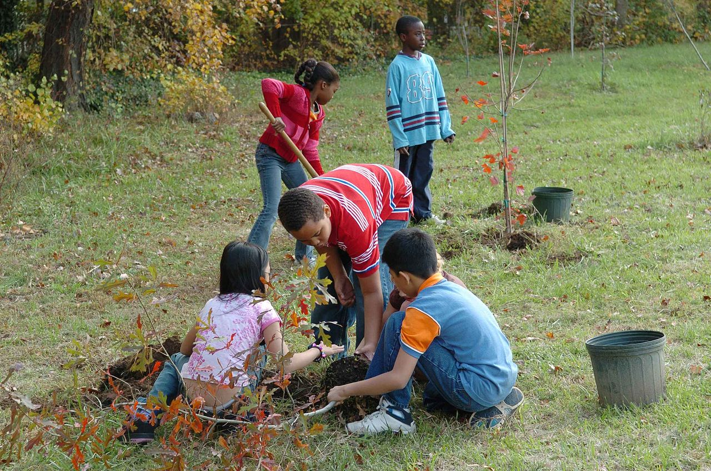

Contáctanos: +52 999 926-3333
Mérida, Yucatán es un lugar único, rico en biodiversidad y cultura. Sin embargo, enfrentamos desafíos ambientales que requieren de nuestra acción y atención. Esta campaña de educación ambiental (EcoMérida Educa) no solo esta enfocada en la huella de carbono, sino también en las distintas problemáticas de la ciudad. Busca empoderar a nuestra comunidad con el conocimiento y las herramientas necesarias para proteger y preservar nuestro entorno. Creemos que cada uno de nosotros tiene un granito de arena para ofrecer y así construir un futuro sostenible en nuestra ciudad blanca.
En Mérida hay diversas problemáticas, como el cambio climático, el crecimiento poblacional en ascenso,
la escasez y contaminación del agua, consumismo, entre otros.
Sobre el cambio climático, actualmente ya existen estrategias de mitigación y adaptación, no obstante
el reto es que se creen y se logren más sinergias entre dependencias de diferentes niveles de gobierno
para lograr mitigar y adaptarnos a los efectos del cambio climático, además de disminuír la demanda e impacto de
nuestros recursos naturales.
Por otra parte, aunque aparentemente el agua no parece escasear en esta región, la demanda es cada
vez mayor y gran parte de esta extracción proviene de pozos no regulados. Además, el manto freático
de la región está a pocos metros de la superficie, lo que lo hace más susceptible a la contaminación
proveniente de los lixiviados de desechos sólidos. Y aunque, la planta de separación de desechos
en el relleno sanitario funciona y la ciudad tiene programas que incentivan la separación de residuos,
no es suficiente. Mérida presenta pérdida de vegetación y manglares, así como la contaminación de las reservas
hídricas.
Igualmente, el crecimiento urbano desorganizado, el consumismo y la economía lineal en Mérida solo contribuyen más
a la contaminación y el daño en el medio ambiente, en lugar de comprar, usar y tirar, comencemos
una economía circular, la cual es más sostenible.
Como anteriormente mencionamos, la campaña tiene como objetivo principal fomentar la educación ambiental en nuestra comunidad y así aumentar la conciencia sobre las problemáticas y los desafíos ambientales que enfrenta Mérida. Juntos, a través de la educación y la acción, podemos hacer de Mérida un lugar más verde y sostenible para las generaciones futuras.
Nuestro objetivo principal son los estudiantes de Mérida, ya que como son el futuro de la ciudad blanca,
creemos firmemente en su poder para impulsar un cambio. Sin embargo, la campaña busca ser inclusiva y
accesible para todos, por eso mismo se tienen diversos materiales gratuitos en la página web.
Aunque nuestros esfuerzos se centrarán en los estudiantes, invitamos a cada ciudadano a aprender
y a participar en el proyecto.
Para alcanzar nuestros objetivos, organizamos talleres, pláticas, eventos comunitarios y cursos gratuitos
dirigidos mayormente a los estudiantes. Planeamos presentarnos en diferentes escuelas para otorgar educación
ambiental a cada estudiante. Además, implementaremos proyectos prácticos para enseñar, como la plantación
de árboles, la limpieza de playas o reciclaje en las escuelas.
Debido a que nos tomamos muy en serio nuestros planes
no queremos que solo se queden en un sueño, por lo tanto realizaremos seguimientos de cada progreso de los estudiantes y
los proyectos para evaluar el impacto de nuestras actividades. Estos seguimientos, así como
los anuncios de cada proyecto se actualizarán en las redes sociales para informar a la comunidad.
¡Contáctate con nosotros o permanece atento a nuestras redes sociales!
Contactarme
Mid, M. (2022, 12 enero). Retos ambientales que enfrenta la ciudad de Mérida | MetrópoliMid. MetrópoliMid. https://metropolimid.com.mx/retos-ambientales-que-enfrenta-la-ciudad-de-merida/